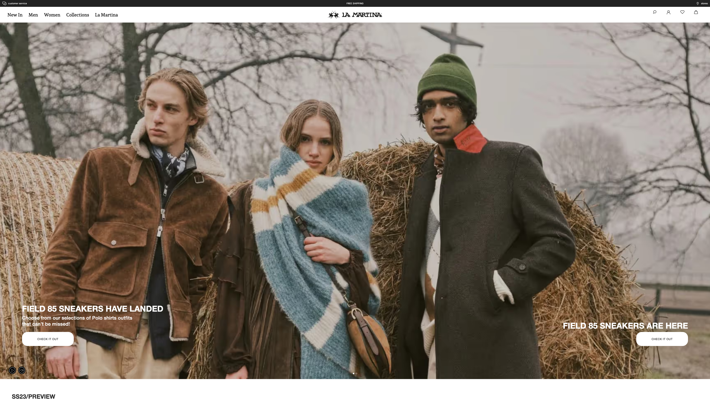
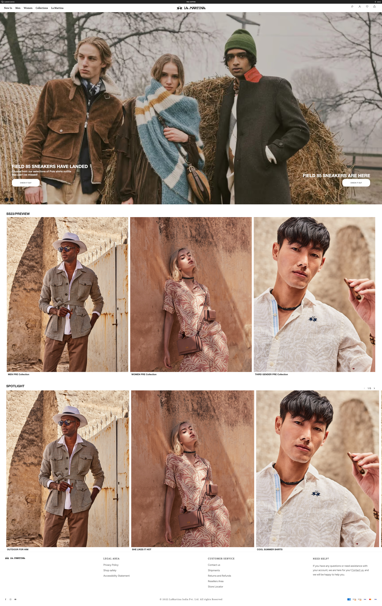
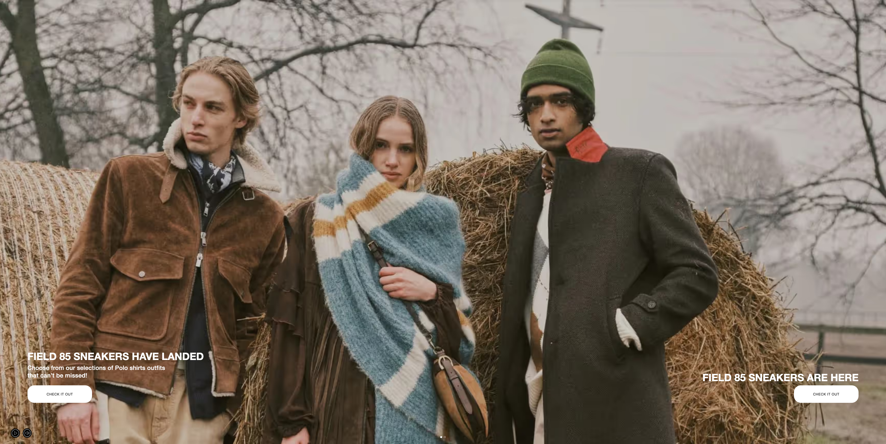
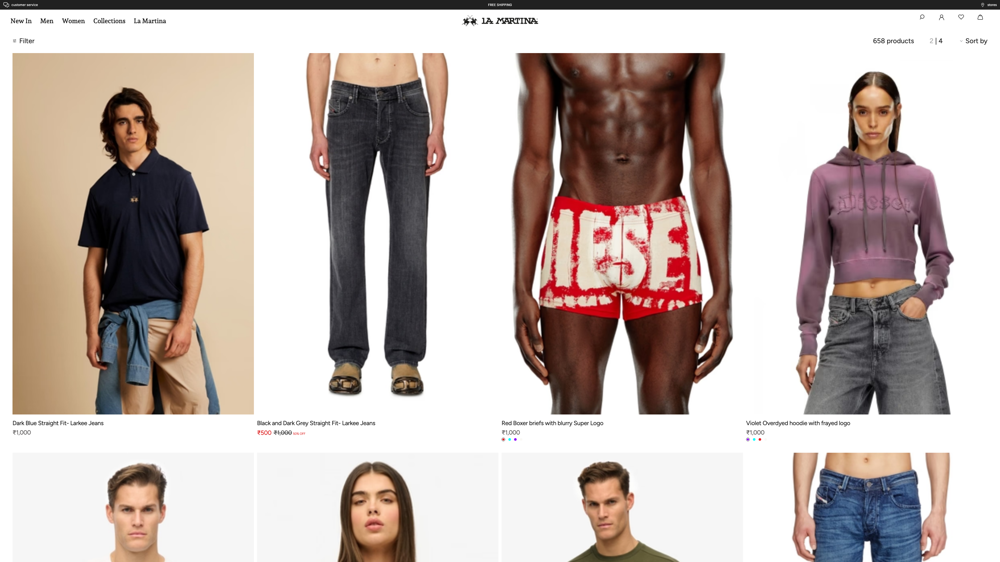
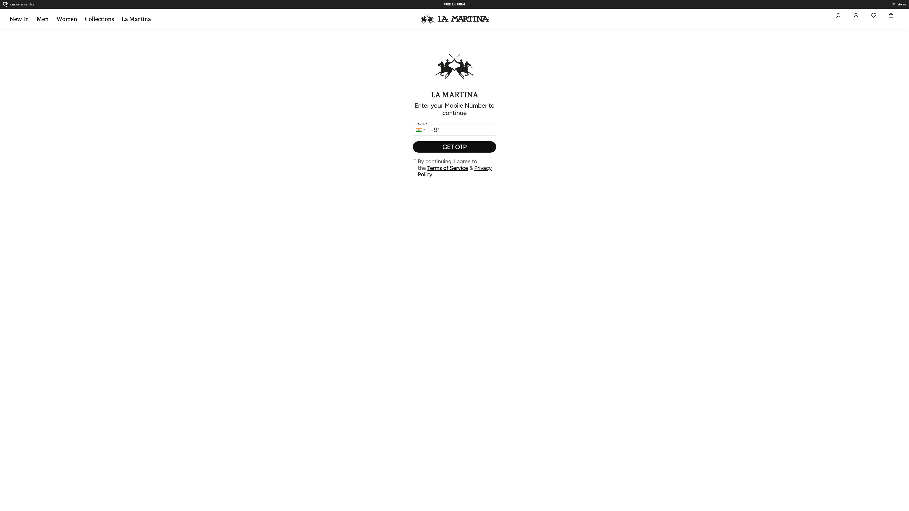
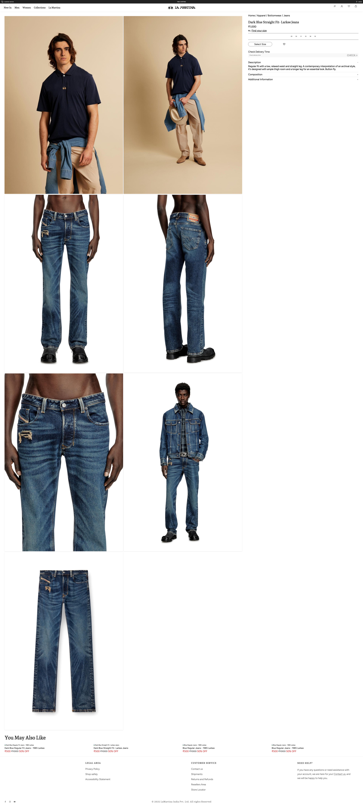

4K Bug Report HIGH SEVERITY
2026-04-03 · 14 bugs · Viewport: 3840×2160 (4K UHD)
lamartina.fynd.io
14 High
14
Total Bugs
14
High
4
Image Quality
5
UI Alignment
2
Functionality
2
Accessibility
1
Navigation
7
Pages Tested
All Bugs (14)
High BUG-001 — Nav Bar Misaligned — / on 4K (lamartina.fynd.io) NEW
| Severity | High |
| Category | UI Alignment 4K Responsive |
| Location | / on 4K (3840x2160) |
| Description | The navigation bar (nav.xDvOo) only covers 14% (554px) of the 4K viewport width (3840px). The nav content is left-aligned with a massive empty gap on the right side, making the header look broken on 4K displays. The issue is consistent across all pages on the site. |
| Steps | 1. Open https://lamartina.fynd.io/ on a 4K display (3840x2160) or use DevTools device emulation 2. Observe the top navigation bar 3. The nav content only occupies the left ~14% of the screen 4. The remaining ~86% on the right side is empty |
| Expected | Navigation bar should span the full viewport width (100%) at 4K resolution, with content properly distributed across the available space |
| Actual | Navigation bar is only 554px wide (14% of 3840px viewport) — leaves 3286px of empty space on the right |
| Fix | Set nav container to width: 100% and remove any restrictive max-width. Use flexbox or grid to distribute nav items across the full width at large viewports. |

Screenshot: / on 4K (3840x2160) — Nav Bar Misaligned — / on 4K (lamartina.fynd.io)
High BUG-002 — Blurry Images — / on 4K (lamartina.fynd.io) NEW
| Severity | High |
| Category | Image Quality 4K Responsive |
| Location | / on 4K (3840x2160) |
| Description | 7 image(s) on the homepage are severely blurry at 4K resolution (3840x2160). The images are being rendered at 1221px wide but the source files are only 578px — a 2.1x upscale that produces visible pixelation. Affected images: 1. <img.lm-colgrid__img>"MEN PRE Collection" — natural: 578px, rendered at: 1221px (2.1x upscale) 2. <img.lm-colgrid__img>"WOMEN PRE Collection" — natural: 588px, rendered at: 1221px (2.1x upscale) 3. <img.lm-colgrid__img>"THIRD GENDER PRE Collection" — natural: 588px, rendered at: 1221px (2.1x upscale) 4. <img.lm-spotlight3__img>"theme-default-image-fd59550e-51ba-4d82-8b42-4a0c8fd6b7cc-177" — natural: 578px, rendered at: 1236px (2.1x upscale) 5. <img.lm-spotlight3__img>"theme-default-image-89db08ea-f095-4c50-8542-b1d4d417548f-177" — natural: 588px, rendered at: 1236px (2.1x upscale) 6. <img.lm-spotlight3__img>"theme-default-image-aa242ba4-23e5-4dcf-8e32-1e60e1b96359-177" — natural: 588px, rendered at: 1236px (2.1x upscale) 7. <img.lm-spotlight3__img>"theme-default-image-302d4257-1991-4a7d-9644-710228c13a62-177" — natural: 578px, rendered at: 1236px (2.1x upscale) |
| Steps | 1. Open https://lamartina.fynd.io/ on a 4K display (3840x2160) or use DevTools device emulation 2. Scroll through the homepage 3. Observe the collection/category images — they appear pixelated and blurry 4. Right-click any image > Inspect to confirm natural dimensions vs rendered size Images that are blurry: 1. <img.lm-colgrid__img>"MEN PRE Collection" — natural: 578px, rendered at: 1221px (2.1x upscale) 2. <img.lm-colgrid__img>"WOMEN PRE Collection" — natural: 588px, rendered at: 1221px (2.1x upscale) 3. <img.lm-colgrid__img>"THIRD GENDER PRE Collection" — natural: 588px, rendered at: 1221px (2.1x upscale) 4. <img.lm-spotlight3__img>"theme-default-image-fd59550e-51ba-4d82-8b42-4a0c8fd6b7cc-177" — natural: 578px, rendered at: 1236px (2.1x upscale) 5. <img.lm-spotlight3__img>"theme-default-image-89db08ea-f095-4c50-8542-b1d4d417548f-177" — natural: 588px, rendered at: 1236px (2.1x upscale) 6. <img.lm-spotlight3__img>"theme-default-image-aa242ba4-23e5-4dcf-8e32-1e60e1b96359-177" — natural: 588px, rendered at: 1236px (2.1x upscale) 7. <img.lm-spotlight3__img>"theme-default-image-302d4257-1991-4a7d-9644-710228c13a62-177" — natural: 578px, rendered at: 1236px (2.1x upscale) |
| Expected | All images should be crisp and sharp at 4K resolution. Source images should be at least as large as their rendered dimensions (1:1 ratio or higher) |
| Actual | 7 images are upscaled 2.1x — source is 578px but rendered at 1221px, causing visible blurriness |
| Fix | Use srcset and sizes attributes to serve higher resolution images for 4K displays. Upload source images at 2x the max rendered size. Use image CDN parameters (e.g., ?w=1200&dpr=2) to request appropriately sized images. |

Screenshot: / on 4K (3840x2160) — Blurry Images — / on 4K (lamartina.fynd.io)
High BUG-003 — Hero Section Content Misaligned — / on 4K (lamartina.fynd.io) NEW
| Severity | High |
| Category | UI Alignment 4K Responsive |
| Location | / on 4K (3840x2160) |
| Description | 4 hero section element(s) occupy less than 30% of the 4K viewport width and appear pushed to the left, leaving 70%+ of the screen empty. The hero CTA and text content look disproportionately small on 4K displays. Affected elements: 1. <div.lm-hero1__block>"FIELD 85 SNEAKERS HAVE LANDEDChoose from" — only 764px wide (20% of viewport) 2. <div.lm-hero1__subtitle>"Choose from our selections of Polo shirt" — only 620px wide (16% of viewport) 3. <a.lm-hero1__cta>"CHECK IT OUT" — only 280px wide (7% of viewport) 4. <div.lm-hero1__title>"FIELD 85 SNEAKERS HAVE LANDED" — only 764px wide (20% of viewport) |
| Steps | 1. Open https://lamartina.fynd.io/ on a 4K display (3840x2160) or use DevTools device emulation 2. Look at the hero banner section 3. Notice the text block and CTA button are tiny and left-aligned 4. Over 70% of the hero area on the right side is unused Elements affected: 1. <div.lm-hero1__block>"FIELD 85 SNEAKERS HAVE LANDEDChoose from" — only 764px wide (20% of viewport) 2. <div.lm-hero1__subtitle>"Choose from our selections of Polo shirt" — only 620px wide (16% of viewport) 3. <a.lm-hero1__cta>"CHECK IT OUT" — only 280px wide (7% of viewport) 4. <div.lm-hero1__title>"FIELD 85 SNEAKERS HAVE LANDED" — only 764px wide (20% of viewport) |
| Expected | Hero content (title, subtitle, CTA) should scale proportionally at 4K and be properly centered or span a reasonable portion of the viewport |
| Actual | Hero elements occupy only 20% of the viewport — text and CTA buttons are disproportionately small at 4K |
| Fix | Use responsive typography (clamp() or vw-based units) for hero text. Scale CTA button padding and font size for larger viewports. Center content or use max-width with auto margins. |

Screenshot: / on 4K (3840x2160) — Hero Section Content Misaligned — / on 4K (lamartina.fynd.io)
High BUG-004 — Undersized Clickable Elements — / on 4K (lamartina.fynd.io) NEW
| Severity | High |
| Category | UI Alignment 4K Responsive |
| Location | / on 4K (3840x2160) |
| Description | 10 button(s) or link(s) on this page are disproportionately small at 4K (3840x2160). They are so tiny relative to the viewport that a user cannot accurately click them. Affected elements: 1. <a.M0si4>"customer service" — only 133x24px — too small to click 2. <a.M0si4>"stores" — only 60x16px — too small to click 3. <a>"Men" — only 51x30px — too small to click 4. <a.WzYEB>"New In" — only 498x23px — too small to click 5. <a.WzYEB>"Men" — only 498x23px — too small to click 6. <a.WzYEB>"Women" — only 522x23px — too small to click 7. <a.WzYEB>"Collections" — only 522x23px — too small to click 8. <a.WzYEB>"La Martina" — only 498x23px — too small to click 9. <a>"LEGAL AREA" — only 164x27px — too small to click 10. <a>"CUSTOMER SERVICE" — only 269x27px — too small to click |
| Steps | 1. Open https://lamartina.fynd.io/ on a 4K display (3840x2160) or use DevTools device emulation 2. Try clicking the elements listed below 3. They are very small relative to the large viewport and hard to target Elements that are too small: 1. <a.M0si4>"customer service" — only 133x24px — too small to click 2. <a.M0si4>"stores" — only 60x16px — too small to click 3. <a>"Men" — only 51x30px — too small to click 4. <a.WzYEB>"New In" — only 498x23px — too small to click 5. <a.WzYEB>"Men" — only 498x23px — too small to click 6. <a.WzYEB>"Women" — only 522x23px — too small to click 7. <a.WzYEB>"Collections" — only 522x23px — too small to click 8. <a.WzYEB>"La Martina" — only 498x23px — too small to click 9. <a>"LEGAL AREA" — only 164x27px — too small to click 10. <a>"CUSTOMER SERVICE" — only 269x27px — too small to click |
| Expected | All buttons and links on the page should be clickable and respond to user interaction with adequate sizing at 4K |
| Actual | 10 element(s) are too small — they are under 80px wide or 30px tall at 4K resolution |
| Fix | Use responsive sizing (clamp(), min(), or vw-based units) for button padding and font sizes. Ensure all interactive elements meet minimum 44x44px click target size at any resolution. |
Screenshot: / on 4K (3840x2160) — Undersized Clickable Elements — / on 4K (lamartina.fynd.io)
High BUG-005 — Header Icons Missing — / on 4K (lamartina.fynd.io) NEW
| Severity | High |
| Category | Navigation 4K Responsive |
| Location | / on 4K (3840x2160) |
| Description | 2 essential header icon(s) could not be found at 4K resolution (3840x2160). Standard e-commerce header navigation icons (cart, user/account) are either not rendered or not detectable. Missing elements: 1. Cart icon — not found in header 2. Account/Login icon — not found in header |
| Steps | 1. Open https://lamartina.fynd.io/ on a 4K display (3840x2160) or use DevTools device emulation 2. Look at the top-right area of the header for cart and account icons 3. Cart icon and Account/Login icon cannot be found 4. Users cannot access their cart or account from the header |
| Expected | Header should contain visible and accessible cart and account/login icons at all resolutions including 4K |
| Actual | Cart icon and Account/Login icon not found in the header at 4K resolution |
| Fix | Ensure cart and account icons are rendered in the header at 4K viewports. Check if these elements are hidden by a media query or if their selectors/class names follow standard conventions. |
Screenshot: / on 4K (3840x2160) — Header Icons Missing — / on 4K (lamartina.fynd.io)
High BUG-006 — Product Images Blurry — /products on 4K (lamartina.fynd.io) NEW
| Severity | High |
| Category | Image Quality 4K Responsive |
| Location | /products on 4K (3840x2160) |
| Description | 17 unique product image(s) on the products listing page are rendered at 927px but the source images are only 300px — a 3.1x upscale that makes every product image appear pixelated and blurry at 4K. Affected products: 1. <img.rs6Gb>"Dark Blue Straight Fit- Larkee Jeans" — natural: 300px, rendered: 927px (3.1x upscale) 2. <img.rs6Gb>"Black and Dark Grey Straight Fit- Larkee Jeans" — natural: 300px, rendered: 927px (3.1x upscale) 3. <img.rs6Gb>"Red Boxer briefs with blurry Super Logo" — natural: 300px, rendered: 927px (3.1x upscale) 4. <img.rs6Gb>"Violet Overdyed hoodie with frayed logo" — natural: 300px, rendered: 927px (3.1x upscale) 5. <img.rs6Gb>"TECH RELAXED TEE" — natural: 300px, rendered: 927px (3.1x upscale) 6. <img.rs6Gb>"LACE BUTTON THROUGH CAMI TOP" — natural: 300px, rendered: 927px (3.1x upscale) 7. <img.rs6Gb>"Dark Blue Regular Fit Jeans - 1985 Larkee" — natural: 300px, rendered: 927px (3.1x upscale) 8. <img.rs6Gb>"RAW EDGE SLUB V T SHIRT" — natural: 300px, rendered: 927px (3.1x upscale) |
| Steps | 1. Open https://lamartina.fynd.io/products on a 4K display (3840x2160) or use DevTools device emulation 2. Browse the product grid 3. All product images appear pixelated and blurry 4. Right-click any product image > Inspect to see natural size is 300px but rendered at 927px Affected products: 1. <img.rs6Gb>"Dark Blue Straight Fit- Larkee Jeans" — natural: 300px, rendered: 927px (3.1x upscale) 2. <img.rs6Gb>"Black and Dark Grey Straight Fit- Larkee Jeans" — natural: 300px, rendered: 927px (3.1x upscale) 3. <img.rs6Gb>"Red Boxer briefs with blurry Super Logo" — natural: 300px, rendered: 927px (3.1x upscale) 4. <img.rs6Gb>"Violet Overdyed hoodie with frayed logo" — natural: 300px, rendered: 927px (3.1x upscale) 5. <img.rs6Gb>"TECH RELAXED TEE" — natural: 300px, rendered: 927px (3.1x upscale) 6. <img.rs6Gb>"LACE BUTTON THROUGH CAMI TOP" — natural: 300px, rendered: 927px (3.1x upscale) 7. <img.rs6Gb>"Dark Blue Regular Fit Jeans - 1985 Larkee" — natural: 300px, rendered: 927px (3.1x upscale) 8. <img.rs6Gb>"RAW EDGE SLUB V T SHIRT" — natural: 300px, rendered: 927px (3.1x upscale) |
| Expected | Product images should be crisp at 4K. Source images should be at least 1:1 with rendered size (minimum 900px+ for the current grid layout) |
| Actual | 17 product images are 3.1x upscaled — source is only 300px but rendered at 927px |
| Fix | Request higher resolution product images from the CDN using width/DPR parameters (e.g., ?w=900 or ?dpr=2). Implement srcset to serve appropriate sizes based on viewport. Minimum recommended source width: 900px for 4K grid display. |

Screenshot: /products on 4K (3840x2160) — Product Images Blurry — /products on 4K (lamartina.fynd.io)
High BUG-007 — Nav Bar Misaligned — /products on 4K (lamartina.fynd.io) NEW
| Severity | High |
| Category | UI Alignment 4K Responsive |
| Location | /products on 4K (3840x2160) |
| Description | The navigation bar (nav.xDvOo) only covers 14% (554px) of the 4K viewport on the products page. The nav is compressed to the left with a massive empty gap on the right, making the page header look broken. |
| Steps | 1. Open https://lamartina.fynd.io/products on a 4K display (3840x2160) or use DevTools device emulation 2. Observe the top navigation bar 3. The nav is squeezed into the left 14% of the screen 4. The right 86% is completely empty |
| Expected | Navigation should span 100% of the viewport width at 4K resolution |
| Actual | Nav is 554px wide — only 14% of 3840px viewport |
| Fix | Remove max-width constraints on the nav container and set width: 100%. Distribute nav items using flexbox across the full width. |
Screenshot: /products on 4K (3840x2160) — Nav Bar Misaligned — /products on 4K (lamartina.fynd.io)
High BUG-008 — Lazy-Loaded Images Broken in Viewport — /products on 4K (lamartina.fynd.io) NEW
| Severity | High |
| Category | Image Quality 4K Responsive |
| Location | /products on 4K (3840x2160) |
| Description | 3 of 32 lazy-loaded images that are within the visible viewport at 4K (2160px tall) failed to load. Because the 4K viewport is much taller than standard displays, more images are "above the fold" but the lazy loading threshold may not account for this. Broken images: 1. <img>"QRh_kwy0f-Home.png?dpr=1" at y=0px — 0x0px — not loaded 2. <img>"_7Cid-lB7-Collections.png?dpr=1" at y=0px — 0x0px — not loaded 3. <img>"Emn-_d_tI-La-Martina.jpeg?dpr=1" at y=0px — 0x0px — not loaded |
| Steps | 1. Open https://lamartina.fynd.io/products on a 4K display (3840x2160) or use DevTools device emulation 2. Wait for the page to fully load (5+ seconds) 3. Observe blank/missing image placeholders within the visible viewport 4. These images have loading="lazy" but are in the viewport and should have loaded Broken images: 1. <img>"QRh_kwy0f-Home.png?dpr=1" at y=0px — 0x0px — not loaded 2. <img>"_7Cid-lB7-Collections.png?dpr=1" at y=0px — 0x0px — not loaded 3. <img>"Emn-_d_tI-La-Martina.jpeg?dpr=1" at y=0px — 0x0px — not loaded |
| Expected | All images within the visible viewport should load immediately, regardless of the loading="lazy" attribute |
| Actual | 3/32 lazy images within the 4K viewport did not load — leaving blank spaces |
| Fix | For images that are likely to be in the initial viewport at large resolutions, either remove loading="lazy" or use loading="eager". Consider using Intersection Observer with a larger rootMargin to preload images near the viewport edge. |
Screenshot: /products on 4K (3840x2160) — Lazy-Loaded Images Broken in Viewport — /products on 4K (lamartina.fynd.io)
High BUG-009 — Collection Images Blurry — /collections on 4K (lamartina.fynd.io) NEW
| Severity | High |
| Category | Image Quality 4K Responsive |
| Location | /collections on 4K (3840x2160) |
| Description | 1 collection image(s) are severely blurry at 4K. Source images are 312px but rendered at 922px — a 3.0x upscale. Affected images: 1. <img>"xzuftshmmw4yuwzb12pm.png?dpr=1" — natural: 312px, rendered: 922px (3.0x upscale) |
| Steps | 1. Open https://lamartina.fynd.io/collections on a 4K display (3840x2160) or use DevTools device emulation 2. View the collection grid 3. All collection cover images appear pixelated and blurry 4. Source images are only 312px wide but displayed at 922px Affected images: 1. <img>"xzuftshmmw4yuwzb12pm.png?dpr=1" — natural: 312px, rendered: 922px (3.0x upscale) |
| Expected | Collection images should be crisp and sharp at 4K with source images at least matching rendered dimensions |
| Actual | 1 collection images are 3.0x upscaled — visibly blurry at 4K |
| Fix | Upload higher resolution collection images (at least 900px wide). Use srcset/sizes for responsive image delivery. Use image CDN parameters to request appropriate resolutions. |

Screenshot: /collections on 4K (3840x2160) — Collection Images Blurry — /collections on 4K (lamartina.fynd.io)
High BUG-010 — Undersized Clickable Elements — /auth/login on 4K (lamartina.fynd.io) NEW
| Severity | High |
| Category | UI Alignment 4K Responsive |
| Location | /auth/login on 4K (3840x2160) |
| Description | 8 button(s) or link(s) on the login page are disproportionately small at 4K resolution (3840x2160). They are difficult to locate and click on a large viewport. Affected elements: 1. <a.M0si4>"customer service" — only 133x24px — too small to click 2. <a.M0si4>"stores" — only 60x16px — too small to click 3. <a>"Men" — only 51x30px — too small to click 4. <a.WzYEB>"New In" — only 498x23px — too small to click 5. <a.WzYEB>"Men" — only 498x23px — too small to click 6. <a.WzYEB>"Women" — only 522x23px — too small to click 7. <a.WzYEB>"Collections" — only 522x23px — too small to click 8. <a.WzYEB>"La Martina" — only 498x23px — too small to click |
| Steps | 1. Open https://lamartina.fynd.io/auth/login on a 4K display (3840x2160) or use DevTools device emulation 2. Try clicking the elements listed below 3. They are very small relative to the large viewport Elements that are too small: 1. <a.M0si4>"customer service" — only 133x24px — too small to click 2. <a.M0si4>"stores" — only 60x16px — too small to click 3. <a>"Men" — only 51x30px — too small to click 4. <a.WzYEB>"New In" — only 498x23px — too small to click 5. <a.WzYEB>"Men" — only 498x23px — too small to click 6. <a.WzYEB>"Women" — only 522x23px — too small to click 7. <a.WzYEB>"Collections" — only 522x23px — too small to click 8. <a.WzYEB>"La Martina" — only 498x23px — too small to click |
| Expected | All buttons and interactive elements should scale proportionally at 4K and maintain minimum 44x44px clickable area |
| Actual | 8 element(s) are under 80px wide or 30px tall — too small at 4K resolution |
| Fix | Use responsive sizing for button padding and font sizes. Ensure all interactive elements meet WCAG minimum 44x44px target size. |

Screenshot: /auth/login on 4K (3840x2160) — Undersized Clickable Elements — /auth/login on 4K (lamartina.fynd.io)
High BUG-011 — PDP Image Gallery Missing — /product/dark-blue-straight-fit-larkee-j on 4K (lamartina.fynd.io) NEW
| Severity | High |
| Category | UI Functionality 4K Responsive |
| Location | /product/dark-blue-straight-fit-larkee-jeans-17576710 on 4K (3840x2160) |
| Description | The product detail page has no visible image gallery navigation at 4K resolution — no arrow buttons, no thumbnail strip, and no carousel indicators. Users cannot browse through different product images. Missing elements: 1. Previous/Next arrows — not found 2. Thumbnail image strip — not found 3. Carousel dots/indicators — not found |
| Steps | 1. Open https://lamartina.fynd.io/product/dark-blue-straight-fit-larkee-jeans-17576710 on a 4K display (3840x2160) or use DevTools device emulation 2. Look for image navigation controls (arrows, thumbnails, dots) 3. No gallery navigation elements are present 4. User can only see the default product image |
| Expected | PDP should have image gallery navigation (arrows, thumbnails, or swipe) allowing users to view all product images |
| Actual | No gallery navigation found — 0 arrows, 0 thumbnails detected |
| Fix | Ensure image gallery component renders navigation controls (prev/next arrows, thumbnail strip) on the PDP. Check if the gallery JS is loading correctly at 4K viewport sizes. |

Screenshot: /product/dark-blue-straight-fit-larkee-jeans-17576710 on 4K (3840x2160) — PDP Image Gallery Missing — /product/dark-blue-straight-fit-larkee-j on 4K (lamartina.fynd.io)
High BUG-012 — PDP Critical Elements Missing — /product/dark-blue-straight-fit-larkee-j on 4K (lamartina.fynd.io) NEW
| Severity | High |
| Category | UI Functionality 4K Responsive |
| Location | /product/dark-blue-straight-fit-larkee-jeans-17576710 on 4K (3840x2160) |
| Description | The product detail page is missing critical e-commerce elements at 4K resolution: Size/variant selector and Add to Cart / Buy button. This completely blocks the purchase funnel — users cannot select a product variant or add items to their cart. Missing elements: 1. Size/variant selector — not found 2. Add to Cart / Buy button — not found |
| Steps | 1. Open https://lamartina.fynd.io/product/dark-blue-straight-fit-larkee-jeans-17576710 on a 4K display (3840x2160) or use DevTools device emulation 2. Try to select a product size/variant 3. Try to find and click "Add to Cart" or "Buy" button 4. Neither element is present or visible Missing elements: 1. Size/variant selector — not found 2. Add to Cart / Buy button — not found |
| Expected | PDP must display a working size/variant selector and a prominent Add to Cart button at all resolutions including 4K |
| Actual | Size/variant selector and Add to Cart / Buy button not found on the PDP — purchase flow is completely blocked |
| Fix | Verify PDP components render at 4K viewport. Check if size selector and ATC button are hidden behind media queries or if the component JS fails to initialize at large viewports. Ensure these critical elements have no max-width or display:none rules at 4K. |

Screenshot: /product/dark-blue-straight-fit-larkee-jeans-17576710 on 4K (3840x2160) — PDP Critical Elements Missing — /product/dark-blue-straight-fit-larkee-j on 4K (lamartina.fynd.io)
High BUG-013 — No Focus Indicators — / on 4K (lamartina.fynd.io) NEW
| Severity | High |
| Category | Accessibility 4K Responsive |
| Location | / on 4K (3840x2160) |
| Description | 49 of 49 focusable elements (100%) lack visible focus indicators at 4K. Keyboard navigation is impossible to track visually. This is a WCAG 2.4.7 violation. Example elements: 1. <a.M0si4>"customer service" — no focus outline 2. <a.M0si4>"stores" — no focus outline 3. <a>"New In" — no focus outline 4. <a>"Men" — no focus outline 5. <a>"Women" — no focus outline |
| Steps | 1. Open https://lamartina.fynd.io/ on a 4K display (3840x2160) 2. Press Tab to navigate through the page 3. No visible focus ring or outline appears on any element 4. User cannot tell which element is currently focused Example elements without focus: 1. <a.M0si4>"customer service" — no focus outline 2. <a.M0si4>"stores" — no focus outline 3. <a>"New In" — no focus outline 4. <a>"Men" — no focus outline 5. <a>"Women" — no focus outline |
| Expected | All focusable elements should display a visible focus indicator (outline, box-shadow, or color change) when navigated to via keyboard |
| Actual | 49/49 focusable elements have outline: none with no alternative focus style — keyboard users cannot navigate the page |
| Fix | Add visible :focus and :focus-visible styles to all interactive elements. Use outline: 2px solid currentColor or box-shadow with sufficient contrast. Do not set outline: none without providing an alternative focus style. |
Screenshot: / on 4K (3840x2160) — No Focus Indicators — / on 4K (lamartina.fynd.io)
High BUG-014 — Poor Color Contrast — / on 4K (lamartina.fynd.io) NEW
| Severity | High |
| Category | Accessibility 4K Responsive |
| Location | / on 4K (3840x2160) |
| Description | 47 of 53 text elements (89%) have a contrast ratio below the WCAG AA minimum of 4.5:1. Text is hard to read, especially on 4K displays where pixel density can amplify the effect. Example elements: 1. <a>"New In" — contrast ratio: 1.09:1 (fg: rgb(14, 14, 14), bg: rgba(0, 0, 0, 0)) 2. <a>"Men" — contrast ratio: 1.09:1 (fg: rgb(14, 14, 14), bg: rgba(0, 0, 0, 0)) 3. <a>"Women" — contrast ratio: 1.09:1 (fg: rgb(14, 14, 14), bg: rgba(0, 0, 0, 0)) 4. <a>"Collections" — contrast ratio: 1.09:1 (fg: rgb(14, 14, 14), bg: rgba(0, 0, 0, 0)) 5. <a>"La Martina" — contrast ratio: 1.09:1 (fg: rgb(14, 14, 14), bg: rgba(0, 0, 0, 0)) |
| Steps | 1. Open https://lamartina.fynd.io/ on a 4K display (3840x2160) 2. Observe text elements across the page 3. Many text elements have insufficient contrast against their background 4. Use browser DevTools > Accessibility panel to verify contrast ratios Example elements with low contrast: 1. <a>"New In" — contrast ratio: 1.09:1 (fg: rgb(14, 14, 14), bg: rgba(0, 0, 0, 0)) 2. <a>"Men" — contrast ratio: 1.09:1 (fg: rgb(14, 14, 14), bg: rgba(0, 0, 0, 0)) 3. <a>"Women" — contrast ratio: 1.09:1 (fg: rgb(14, 14, 14), bg: rgba(0, 0, 0, 0)) 4. <a>"Collections" — contrast ratio: 1.09:1 (fg: rgb(14, 14, 14), bg: rgba(0, 0, 0, 0)) 5. <a>"La Martina" — contrast ratio: 1.09:1 (fg: rgb(14, 14, 14), bg: rgba(0, 0, 0, 0)) |
| Expected | All text elements should meet WCAG AA contrast ratio of 4.5:1 for normal text and 3:1 for large text |
| Actual | 47/53 text elements have contrast ratio below 4.5:1 — failing WCAG AA standards |
| Fix | Review text colors against backgrounds to meet WCAG AA (4.5:1 for normal text, 3:1 for large text). Darken text or lighten backgrounds where needed. Use a contrast checker tool to verify. |
Screenshot: / on 4K (3840x2160) — Poor Color Contrast — / on 4K (lamartina.fynd.io)
4K Bug Report · lamartina.fynd.io · 14 HIGH severity bugs · 3840×2160 · Generated 2026-04-03